|
4-4-1-1
|
Scotland | 0 | - | 1 | Morocco |
4-2-3-1
|
| HT 0-1 | ||||||
|
FIFA World CupSaturday 20 June 2026
|
||||||
- Venue
- Boston Stadium
- Attendance
- 64,146
- Referee
- Ilgiz Tantashev
Substitution60'
K. Tierney
B. Gannon-Doak
Yellow card65'
A. Robertson
- 2
Substitution71'
C. Adams
L. Dykes
R. Christie
K. McLean
- 2
Substitution89'
N. Patterson
A. Ralston
J. McGinn
R. Stewart
Whistle45+6'
45+6'
Goal2'
I. Saibari
Assist: B. Díaz
Yellow card23'
I. Diop
- 3
Substitution84'
I. Saibari
S. Rahimi
B. El Khannouss
C. Talbi
B. Díaz
A. Amaimouni-Echghouyab
Substitution90'
A. Ounahi
S. El Mourabet
Scotland | |
|---|---|
Goalkeeper | |
| 1 | A. Gunn |
Defender | |
| 3 | A. Robertson 65' |
| 5 | G. Hanley |
| 13 | J. Hendry |
| 22 | N. Patterson 89' |
Midfielder | |
| 4 | S. McTominay |
| 6 | K. Tierney 60' |
| 7 | J. McGinn 89' |
| 11 | R. Christie 71' |
| 19 | L. Ferguson |
Forward | |
| 10 | C. Adams 71' |
Substitutes | |
| 9 | L. Dykes 71' |
| 14 | R. Stewart 89' |
| 17 | B. Gannon-Doak 60' |
| 23 | K. McLean 71' |
| 24 | A. Ralston 89' |
Morocco | |
Goalkeeper | |
| 1 | Y. Bounou |
Defender | |
| 2 | A. Hakimi |
| 3 | N. Mazraoui |
| 14 | I. Diop 23' |
| 18 | C. Riad |
Midfielder | |
| 6 | A. Bouaddi |
| 8 | A. Ounahi 90' |
| 10 | B. Díaz 84' |
| 23 | B. El Khannouss 84' |
| 24 | N. El Aynaoui |
Forward | |
| 11 | I. Saibari 2'84' |
Substitutes | |
| 7 | C. Talbi 84' |
| 9 | S. Rahimi 84' |
| 15 | S. El Mourabet 90' |
| 21 | A. Amaimouni-Echghouyab 84' |


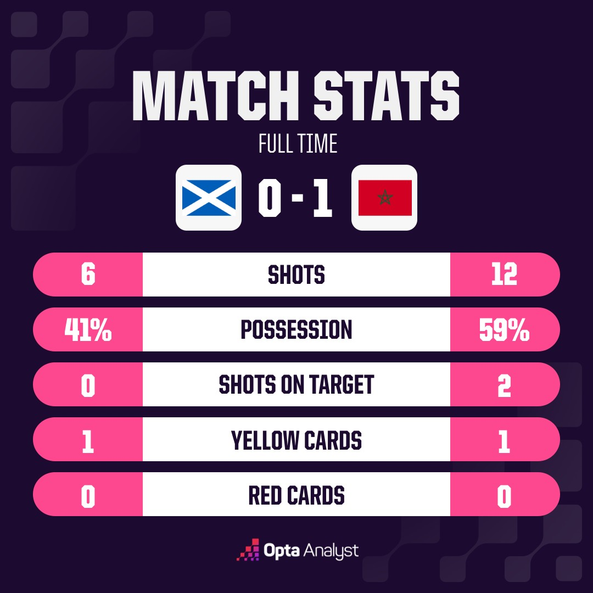
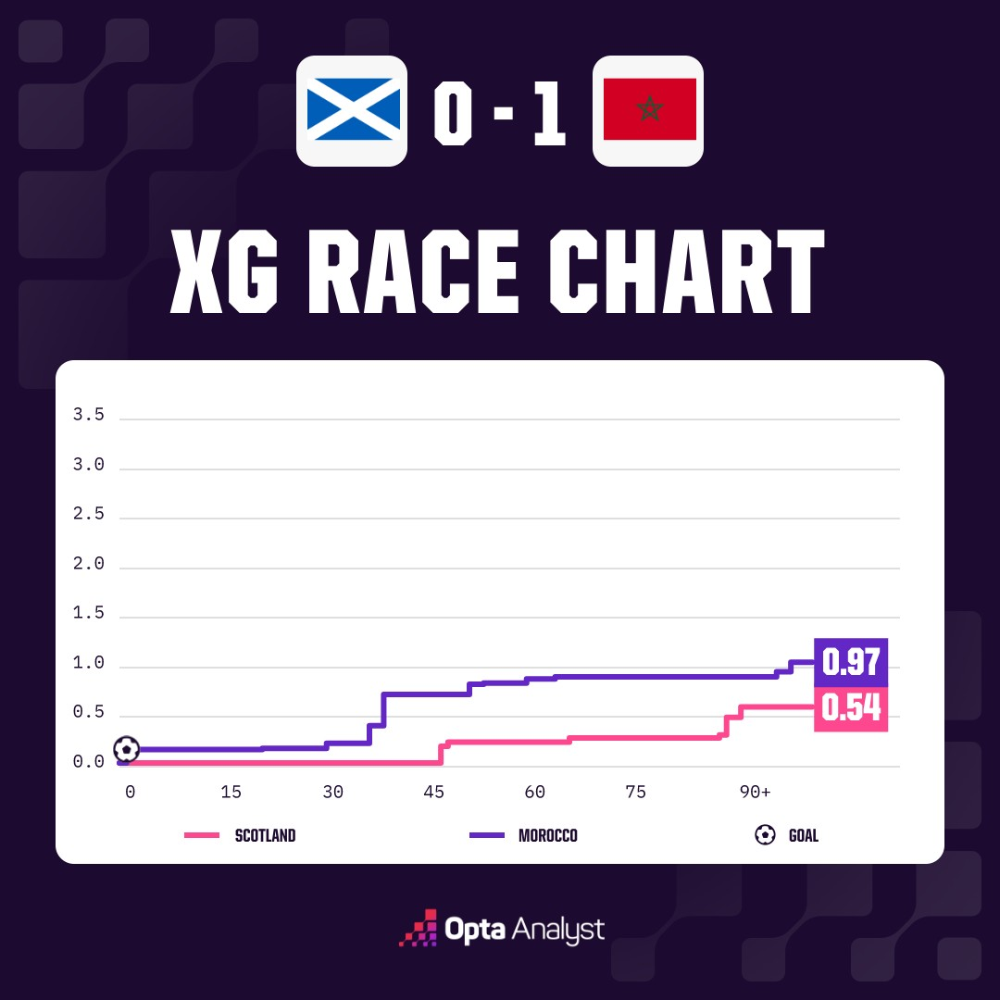
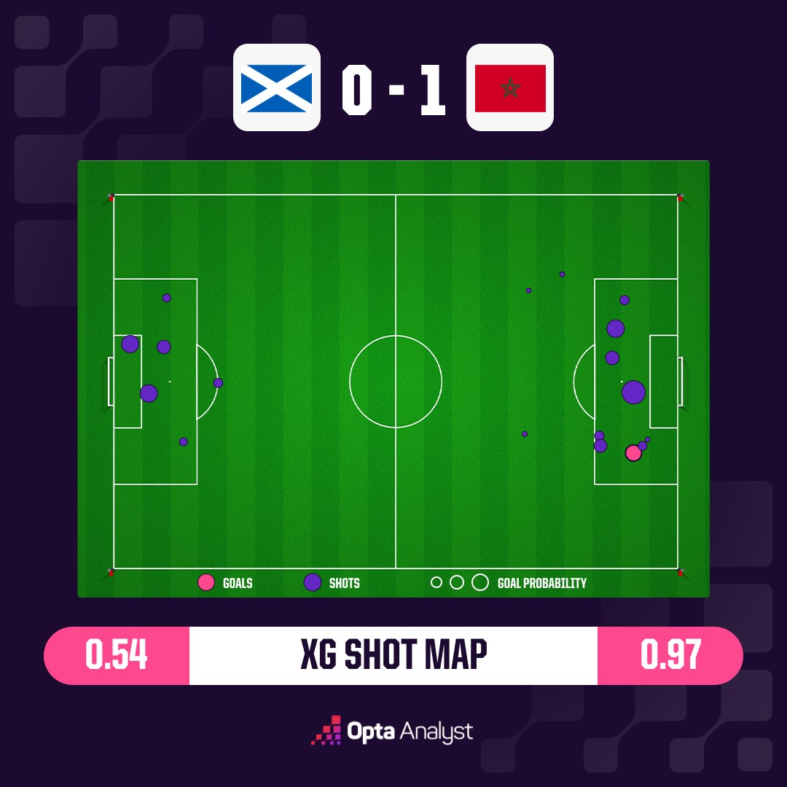
90+7'
Morocco WIN! It’s all over at Boston Stadium, with Morocco coming out on top 0-1 over Scotland, thanks to goal from Ismael Saibari.
90+7'
A free-kick to Morocco, as Anthony Ralston goes in and fouls Achraf Hakimi. However, Scotland will not mind giving one away in this area too much, with plenty of distance to their goal.
90+7'
It’s backs to the wall now — Morocco throwing everything into defending their advantage, with a flurry of crucial interventions.
90+6'
It is a corner now to Scotland, with Morocco somewhat hanging on here as they look to hold out for a positive result. Can Scotland make something of this set-piece opportunity?
90+6'
In the last 15 minutes, it is Scotland who have dominated the ball, having seen 65.16% of the possession, yet they have not been able to go and turn that into a goal just yet, with their opponents standing firm.
90+5'
MISS! A shot from Ayoube Amaimouni-Echghouyab ends up being off target. They might have done a bit better with that one, but it remains Morocco 1-0 Scotland.
90+4'
Still behind, but Scotland are refusing to roll over - defensive urgency rising as they fend off more pressure and push for a late turnaround.
90+3'
A chance goes begging as Chemsdine Talbi gets off a shot that does not hit the target. They might have done better with that one, but instead it is a goal-kick to Scotland.
90+1'
BLOCKED! That was close. Chemsdine Talbi got off a shot, which was heading in, but Grant Hanley was on hand to make a vital intervention. Great block!
90+1'
Azzedine Ounahi’s match is over as Morocco decide to make a substitution. Samir El Mourabet enters the field in what looks like a tactical change.
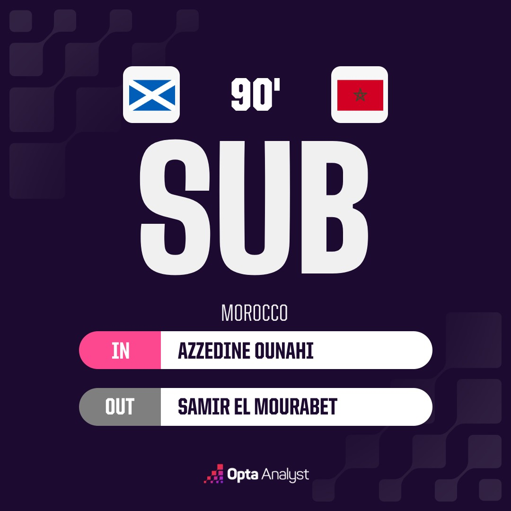
89'
John McGinn’s match is over as Scotland decide to make a substitution. Ross Stewart enters the field in what looks like a tactical change.
89'
A substitution for Scotland sees Nathan Patterson replaced by Anthony Ralston. There does not appear to be any obvious sign of an injury, so that is a tactical switch.
88'
That might have been going in! A fantastic block from Chadi Riad, who gets in the way of a goal-bound effort from Scott McTominay. Would the goalkeeper have been beaten? We will never know.
86'
Set-piece after set-piece - Scotland are turning up the pressure as they search for a breakthrough.
86'
A rash challenge from Soufiane Rahimi, who sends Lewis Ferguson tumbling, giving Scotland a free-kick. It is not in a threatening position, but it gives them a chance to get back on the ball.
86'
A chance goes begging as Lyndon Dykes gets off a shot that does not hit the target. They might have done better with that one, but instead it is a goal-kick to Morocco.
85'
CORNER! The pressure is building for Scotland as they win a set-piece after Scott McTominay's attempt is blocked by Chadi Riad and diverted out of play.
84'
A foul from Ayoube Amaimouni-Echghouyab on Lewis Ferguson sees Scotland win a free-kick, but it is not in a dangerous position, so Morocco should be confident they can defend it easily enough.
84'
Brahim Díaz’s match is over as Morocco decide to make a substitution. Ayoube Amaimouni-Echghouyab enters the field in what looks like a tactical change.
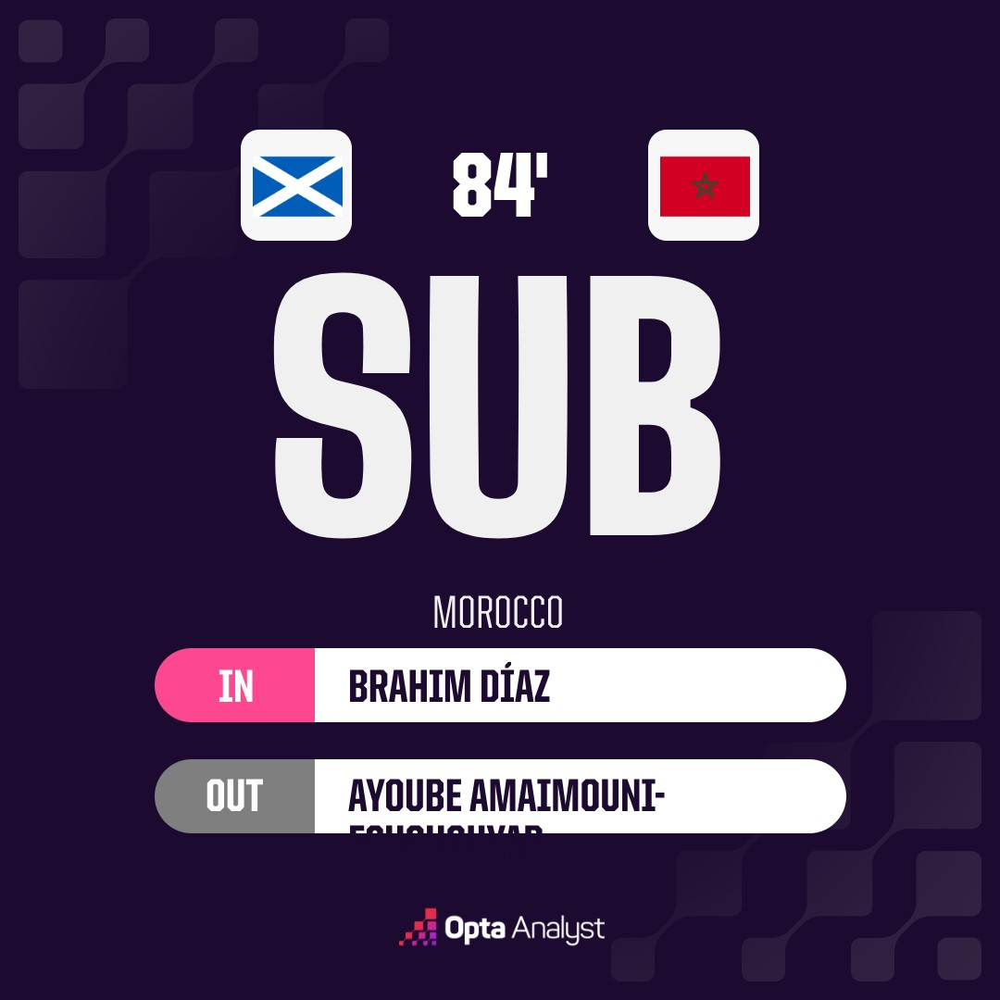
84'
Bilal El Khannouss’s match is over as Morocco decide to make a substitution. Chemsdine Talbi enters the field in what looks like a tactical change.
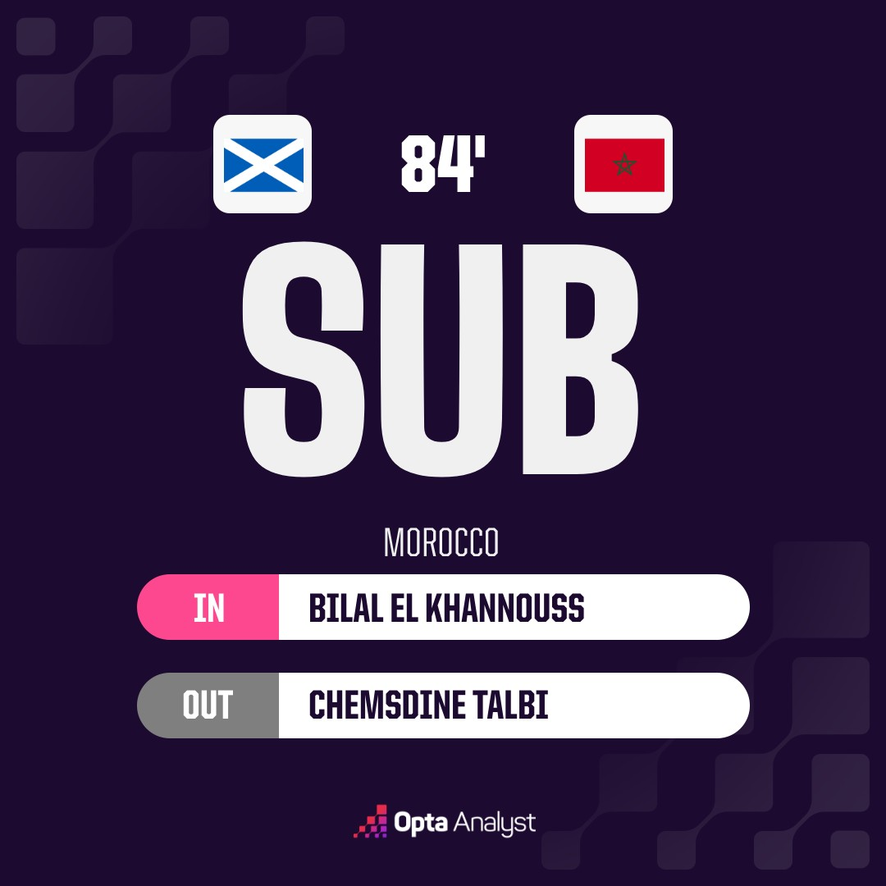
84'
Substitution! Soufiane Rahimi replaces Ismael Saibari for Morocco as the manager shuffles the pack. Can Soufiane Rahimi make an impression as this match continues?
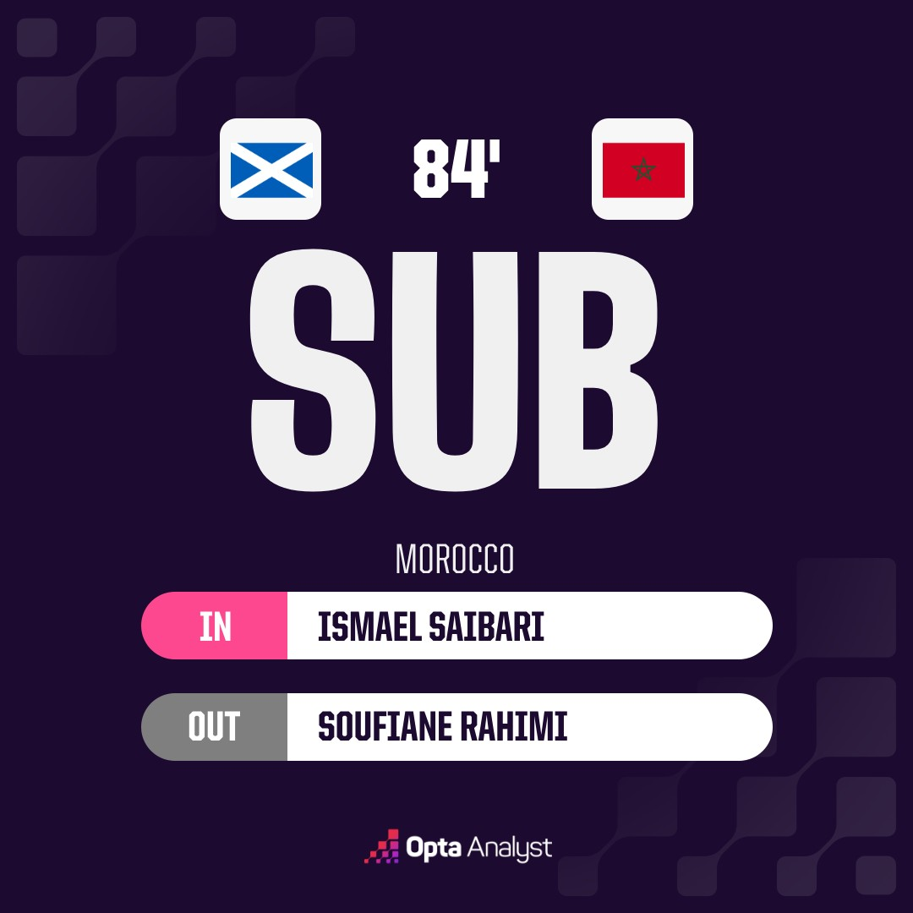
80'
Morocco are running down the clock expertly here. Another lengthy passing sequence that takes 90 seconds off the clock - every pass is eating up precious time for Scotland.
77'
There is plenty of possession for Morocco, with 73.94% compared to Scotland’s 26.06% in the last 15 minutes. However, Morocco have not been able to turn that dominance of the ball into a goal or even a shot during the period – which will be a huge frustration for their coach.
77'
A foul from Brahim Díaz on John McGinn sees Scotland win a free-kick, but it is not in a dangerous position, so Morocco should be confident they can defend it easily enough.
76'
There are 15 minutes plus added time to go in this match. Morocco have had more of the ball so far with a possession figure of 62.84%, while Scotland have had 37.16%.
74'
A foul from Ben Gannon-Doak on Yassine Bounou sees Morocco win a free-kick, but it is not in a dangerous position, so Scotland should be confident they can defend it easily enough.
74'
A lull in this match, as the teams prob and probe, but without much success. It has been 10 minutes since there was an attempt from either side, though Morocco are seeing more of the ball, with 87 per cent possession to Scotland’s 13 per cent during that time.
72'
A foul from Scott McTominay on Brahim Díaz sees Morocco win a free-kick, but it is not in a dangerous position, so Scotland should be confident they can defend it easily enough.
71'
A substitution for Scotland sees Ryan Christie replaced by Kenny McLean. There does not appear to be any obvious sign of an injury, so that is a tactical switch.
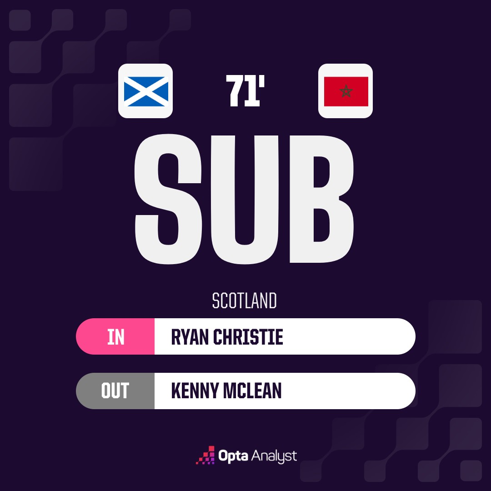
71'
The Scotland manager is looking to the substitutes’ bench, bringing on Lyndon Dykes in place of Ché Adams. Will the change make a difference? Let’s find out!
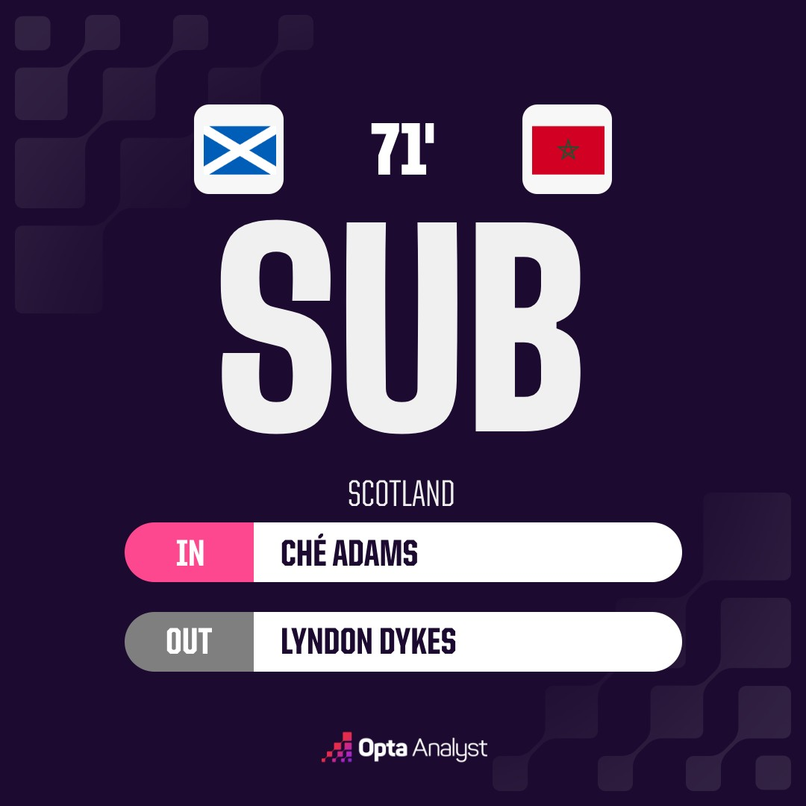
66'
A yellow card for Scotland's Andy Robertson. They will have to walk a tightrope for the rest of this match, and Morocco will likely look to target them and draw a second bookable offence.
66'
With 65 minutes gone, it is Scotland who lead the shot count, with 3 to Morocco’s 9. Scotland have got no on target, while Morocco have managed to get 2 on target.
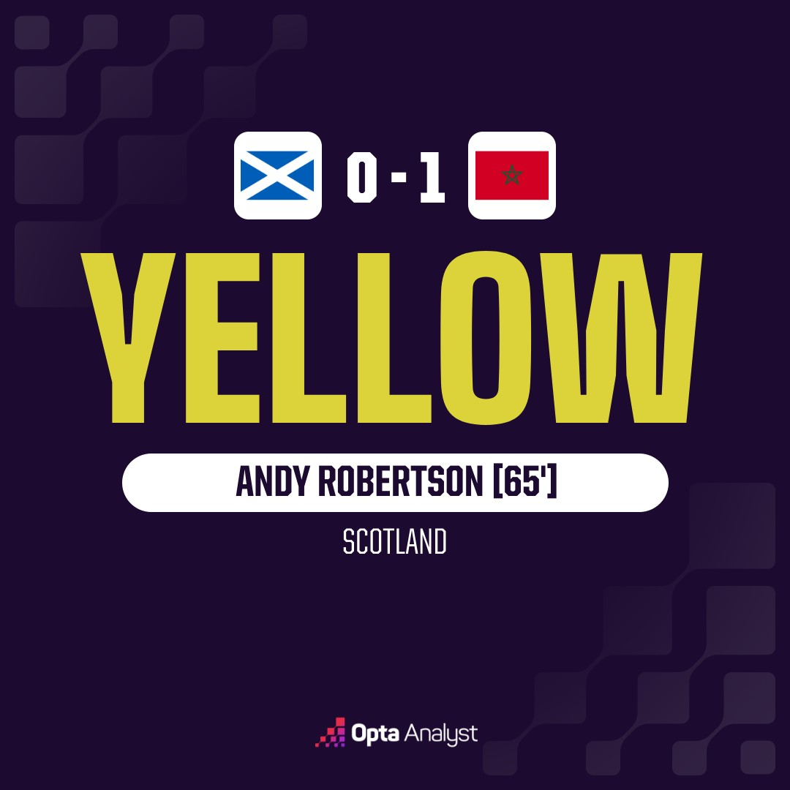
65'
Can Morocco make this chance count? They have won a free-kick in a threatening position after a foul from Andy Robertson on Achraf Hakimi. Will Scotland's defence be tested here?
64'
MISS! The score remains 0-1, with Morocco relieved after Scotland’s Ryan Christie goes for goal but sends their attempt off target. Not one to write home about, that one.
63'
Plenty of the ball in the last quarter-of-an-hour of this match for Morocco, but still Scotland stand firm, despite having had only 34.72% of the ball in that period. Can Morocco make their possessional dominance count?
62'
MISS! The score remains 1-0, with Scotland relieved after Morocco’s Achraf Hakimi goes for goal but sends their attempt off target. Not one to write home about, that one.
62'
Good play from Noussair Mazraoui, who draws a foul from Ben Gannon-Doak to hand Morocco a free-kick in a dangerous position. Will they create something from this set-piece?
61'
Still behind, but Scotland are refusing to roll over - defensive urgency rising as they fend off more pressure and push for a late turnaround.
60'
Kieran Tierney appears to have sustained an injury, and is unable to carry on. They make way for Ben Gannon-Doak.
58'
BLOCK! An intervention from Jack Hendry might have just prevented a goal, with the defending player getting in the way of an attempt from Brahim Díaz. Solid defending there!
57'
Textbook game management from Morocco after the break. They're stroking the ball around with confidence, making Scotland work for every touch while protecting that precious lead.
55'
A rash challenge from Lewis Ferguson, who sends Azzedine Ounahi tumbling, giving Morocco a free-kick. It is not in a threatening position, but it gives them a chance to get back on the ball.
52'
SAVED! Good work from Angus Gunn, who stands firm to deny Bilal El Khannouss, who managed to get a shot away from inside the Scotland area.
50'
Scotland have a corner to defend now after Jack Hendry diverts an attempt from Ismael Saibari out of play. Can Morocco take this chance to get a good delivery in and really test their opponent’s defence?
50'
OFF THE UPRIGHT! Ismael Saibari looks all set to score as their effort beats the Scotland goalkeeper, but the woodwork comes to Morocco rescue. A lucky escape! It remains 1-0.
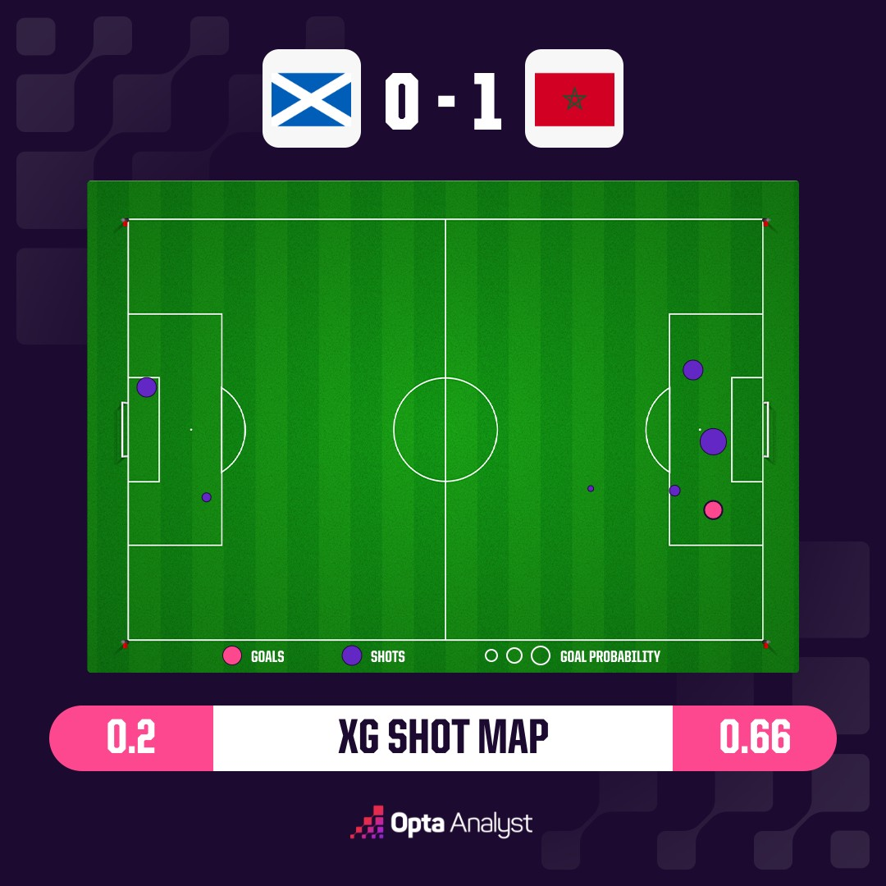
45+6'
Half-time! The referee blows the whistle and it is time for the interval. As we reach the break it is Scotland 0-1 Morocco at Boston Stadium.
45+5'
Great defending from Morocco, who are staying organised and winning key battles to preserve their lead.
45+2'
That might have been going in! A fantastic block from Azzedine Ounahi, who gets in the way of a goal-bound effort from Kieran Tierney. Would the goalkeeper have been beaten? We will never know.
45+1'
MISSED! That is really poor from John McGinn, who fails to convert from a golden opportunity, with the goal gaping. Will Scotland pay for their profligacy, or can they put that miss behind them?
44'
A free-kick to Morocco, as John McGinn goes in and fouls Noussair Mazraoui. However, Scotland will not mind giving one away in this area too much, with plenty of distance to their goal.
43'
Good play from John McGinn, who draws a foul from Noussair Mazraoui to hand Scotland a free-kick in a dangerous position. Will they create something from this set-piece?
42'
Morocco looking confident now - a composed spell of possession as they stroke the ball around and head toward the break in control.
39'
That’s offside! A switched-on defensive line from Morocco, as they step up at the right time to catch Grant Hanley offside, and the assistant referee’s flag is up.
38'
Neil El Aynaoui goes in on Kieran Tierney and concedes a foul. The free-kick is not in a particularly dangerous area from Morocco’s viewpoint, though.
38'
That is a disappointing effort from Achraf Hakimi, who went for glory but got their attempt wrong, and the shot sailed off target. A frustrating moment for Morocco.
37'
In the last 15 minutes, it is Morocco who have dominated the ball, having seen 67.14% of the possession, yet they have not been able to go and turn that into a goal just yet, with their opponents standing firm.
36'
What a chance! That should really have been another goal for Morocco, who would have extended their lead had Bilal El Khannouss kept their composure, but instead Scotland survive that opportunity. Can they make their luck count?
32'
A free-kick to Scotland, as Neil El Aynaoui goes in and fouls Lewis Ferguson. However, Morocco will not mind giving one away in this area too much, with plenty of distance to their goal.
30'
That is a disappointing effort from Neil El Aynaoui, who went for glory but got their attempt wrong, and the shot sailed off target. A frustrating moment for Morocco.
24'
Free-kick! A foul from Kieran Tierney on Achraf Hakimi. It is well away from Scotland’s goal, so it is unlikely to result in a chance for Morocco.
23'
The referee goes to their pocket and pulls out a yellow card, which is brandished in the direction of Issa Diop. Will they be able to avoid a second booking?
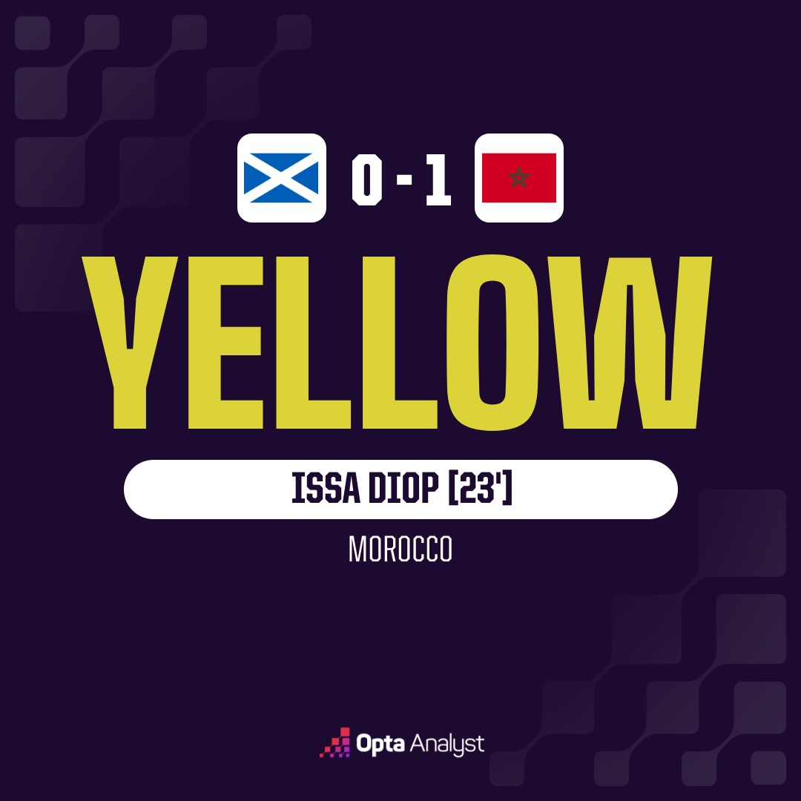
23'
This could be a chance for Scotland, after Issa Diop fouls Ché Adams, handing them a free-kick in a threatening area. A good set-piece from here could really test the Morocco defense!
21'
BLOCKED! That was close. Ayyoub Bouaddi got off a shot, which was heading in, but Ryan Christie was on hand to make a vital intervention. Great block!
21'
Morocco are having plenty of the ball, with 69.34% possession in the last 15 minutes. However, they have been unable to transfer that possessional dominance into a goal during that period.
20'
Corner after corner for Scotland - Morocco are being forced deeper as the pressure ramps up.
17'
Morocco have had plenty of the ball in the last 15 minutes, with 74.30% possession compared to just 25.70% for their opponents. However, there has not been any shot to come from that possessional dominance, which will be a huge frustration for their coach.
16'
Lewis Ferguson goes in on Bilal El Khannouss and concedes a foul. The free-kick is not in a particularly dangerous area from Scotland’s viewpoint, though.
12'
Scotland may be behind, but they’re battling hard defensively to stop the gap from widening. A gritty response at the back.
12'
A lull in this match, as the teams prob and probe, but without much success. It has been 10 minutes since there was an attempt from either side, though Morocco are seeing more of the ball, with 76 per cent possession to Scotland’s 24 per cent during that time.
11'
Morocco's defense is looking formidable early on, calmly and authoritatively dismantling opposition attacks.
3'
Free-kick! A foul from Kieran Tierney on Brahim Díaz. It is well away from Scotland’s goal, so it is unlikely to result in a chance for Morocco.
2'
GOAL! That is 1-0 to Morocco! It has not taken long for the first goal of the game to arrive, with Ismael Saibari finding the back of the net to put Morocco in front. That is just the start the neutral would have wanted to see, with plenty of scope for more goals now.
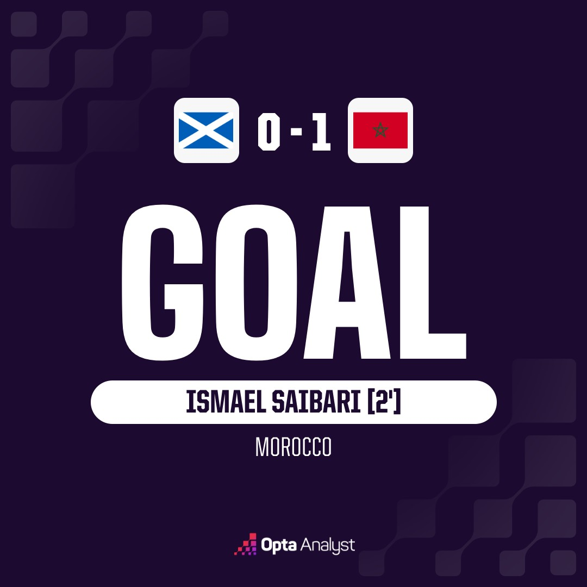
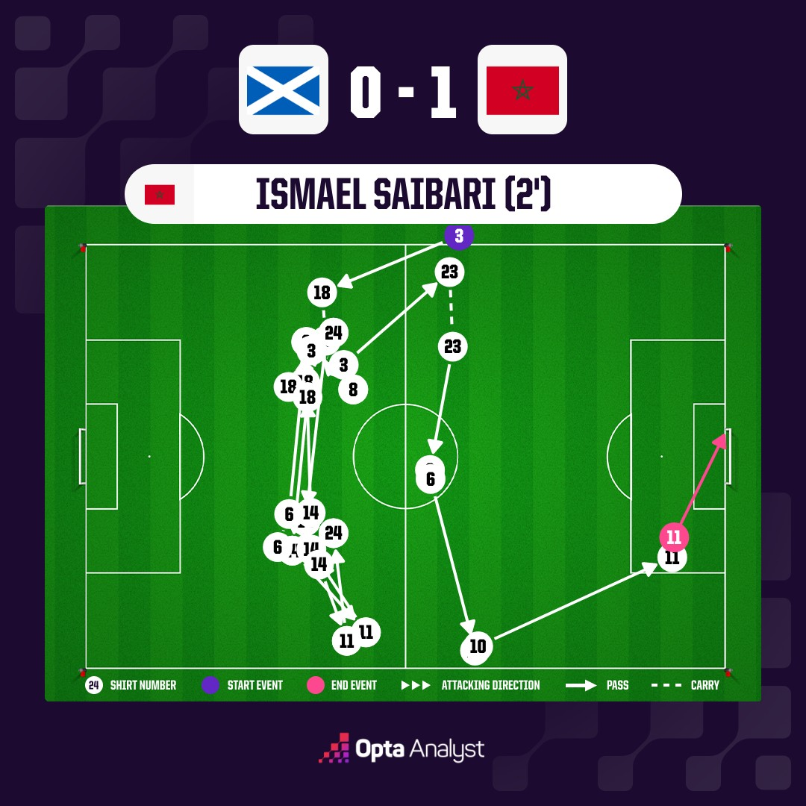
1'
KICK-OFF! And here we go! We are up and running in this clash between Morocco and Scotland at Boston Stadium. Stay tuned for all the action as it happens!
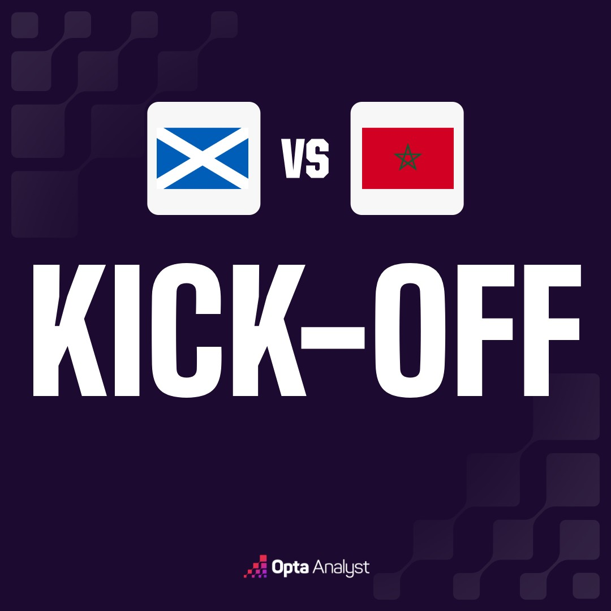
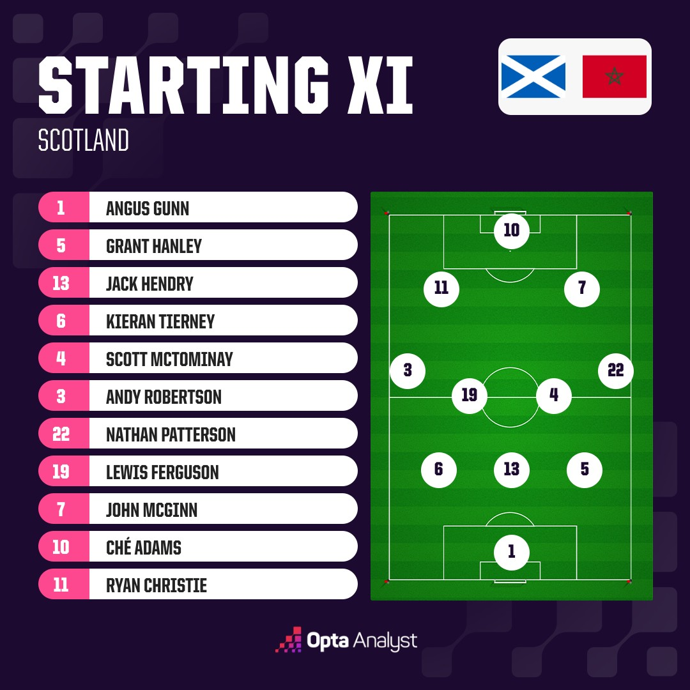
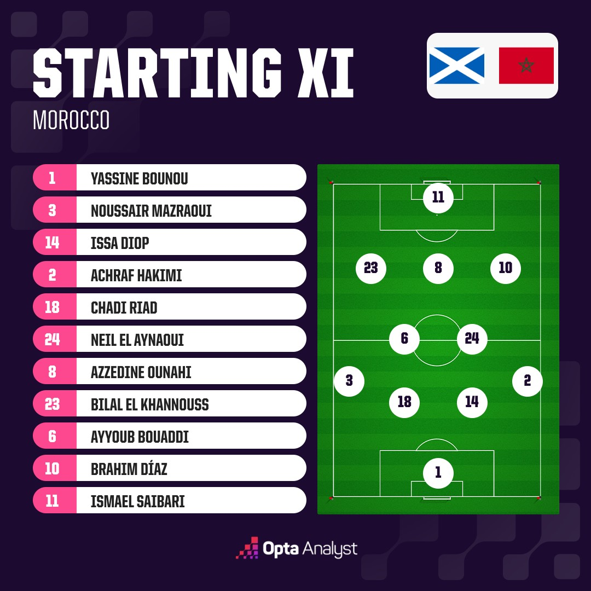
There have been 3 or more goals scored in total in each of Scotland's last 4 home games
Scotland will look to extend their perfect start early in the FIFA World Cup group stage when they face Morocco at Boston Stadium on Friday.
Scotland's opening World Cup group stage match saw them triumph 1-0 over Haiti on June 13. John McGinn was the sole player to net in the win. They have three consecutive wins in all competitions. In five games this year, they have three wins and two losses.
Morocco played out a 1-1 draw against Brazil in their opening World Cup game, a June 13 group stage clash at New York New Jersey Stadium, improving their unbeaten streak to 30. Ismael Saibari was the sole player on the scoresheet in the draw.
Scotland are top of the group on three points, while Morocco's one point places them second. Elsewhere in the group, Brazil are sitting third on one point. Haiti are fourth on zero points.
The previous time the teams faced each other it was Morocco who clinched a 3-0 success in June 1998.
McGinn has the early World Cup scoring lead for Scotland after netting against Haiti. With a goal against Brazil, Saibari is the early leading World Cup scorer for Morocco.
In their last six matches in all competitions, Scotland have won four and lost two. The Scottish side scored 13 and conceded five over that period, scoring first in three of the six contests. A majority of their goals (seven) came in the first half, while their opponents netted two times in the first 45 minutes. The Moroccan side have won three and drawn three in their last six. The Moroccan side scored 14 and conceded four over that stretch, netting first in four of the six. They had four goals in the first half, while their opponents netted only once before the break.
-
General
Possession 41.1% 41.10558.89558.9% Possession lost in defensive half 26 263636 Possession lost in middle third 37 374141 Duels 72 727474 Duels success rate 52.8% 52.77845.94645.9% Aerial duels 16 161616 Aerial duels won 43.8% 43.7556.2556.3% Successful dribbles 4 455 Fouls won 8 81111 Offsides 1 100 Corner awarded 2 255 -
Distribution
Passes 456 456670670 Long passes 47 474444 Long passes proportion (%) 10.3% 10.3076.5676.6% Passing accuracy 85.1% 85.08889.55289.6% Passes in opponents' half 190 190297297 Passing accuracy in opponents' half (%) 70.0% 7082.15582.2% Total passes in the final third 96 96134134 Passing accuracy in final third (%) 61.5% 61.45871.64271.6% Forward passes 271 271400400 Forward passes (%) 59.4% 59.4359.70159.7% Through balls 0 033 Final third entries 59 596262 Penalty area entries 24 242626 Total open play crosses 10 1066 Crosses 13 131010 Crossing accuracy 23.1% 23.0772020.0% -
Attack
Goals 0 011 Shots 6 61212 Shots on target 0 022 Blocked shots 3 344 Headed shots 1 111 Shots outside the box 1 133 Shots inside the box 5 599 Shots accuracy excluding blocked shots 0.0% 02525.0% Shooting accuracy 0.0% 016.66716.7% Key Passes 5 51212 -
Defence
Tackles 20 201010 Tackles success rate 60.0% 606060.0% Clearances 17 171414 Interceptions 9 955 Recoveries 42 424646 Attacking third recovery 4 411 Defensive third recovery 23 232727 Midfield third recovery 15 151818 Recoveries in attacking half (%) 9.5% 9.5242.1742.2% -
Discipline
Fouls conceded 11 1188 Yellow cards 1 111 Red cards 0 000